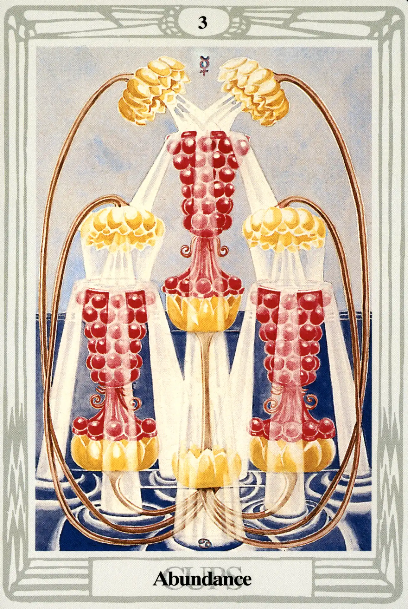

Cups
Three of Cups
Abundance

(Mercury in Cancer)
10° to 20° Cancer
July 2 to July 11
Original Title: Lord of Abundance.
Golden Dawn Model: A hand appears from clouds at the bottom of the card, and grasps the stems of four lotuses or water lilies. Two flowers rise to the right and left and overhang two cups. The third and fourth flowers arise between the lower two and overhang and pour water into a single cup at the top of the card. The top cup overflows in two streams that fill and overflow the lower two cups.
Queen Scale for Binah: Black.
The Four Scales for Mercury: Yellow; Purple; Grey; Indigo, rayed Violet.
The Four Scales for Cancer: Amber; Maroon; Rich bright Russet; Dark Greenish Brown.
Formula: 3 (Binah) of Cups (Briah) + Mercury in Cancer = ABUNDANCE
The three factors of our formula conspire to create a marriage made in heaven. “Mercury is the Will or Word of the All-Father,” Crowley states. “Here its influence descends upon the most receptive of the Signs.”
In an exuberant interpretation of the Golden Dawn model, Harris fills the surface of the Three of Cups to overflowing. The images crowd to the very edges of the card. Her choice of colors is drawn directly from the dictated scales with one stunning exception—the bright red pomegranate cups. They are elevated above a tranquil sea by lotuses and filled with living water by other overhanging lotus blossoms. Crowley calls this the card of Demeter and Persephone and “the fulfillment of the Will of Love in abounding joy. It is the spiritual basis of fertility.”
One could not ask for a more perfect picture of sensuous pleasure and plenty. The imagery of the pomegranates, however, carries a subtle warning. Abundance has its price. Because she swallowed a few seeds of the pomegranate, Persephone was obliged to spend part of every year in the dark realms of her husband, Pluto, the Lord of the Dead. None of the Gods of Olympus, not even great Zeus, could break the spell. Crowley interprets it thus: “The lesson seems to be that the good things of Life, although enjoyed, should be distrusted.”